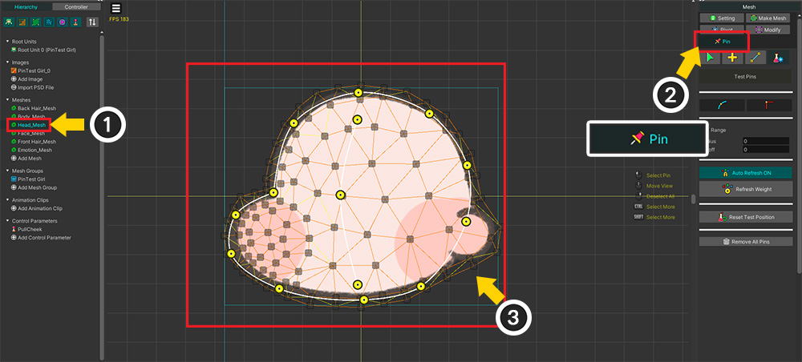

AnyPortrait > Manual > Using Pins in Morph modifier
Using Pins in Morph modifier
1.4.0
The "Pin" tool added in AnyPortrait v1.4.0 makes vertex morphing much more efficient.
This page covers the process of using Pin in Morph Modifier.
You can see how to add pins to the mesh in the manual below.
- Adding Pins

We prepared a cute character to explain.
Let's make this character's cheek slightly pulled using pins.

To move pins with the Morph modifier, the mesh must have pins.
(1) Select the mesh.
(2) Select the Pin menu.
(3) Add pins according to the image and connect them.

In the same way, add pins to the meshes that will be target to vertex morphing.
To control the modifier, a control parameter was created as above.

(1) Select the mesh group.
(2) In the Modifier tab, click the Add Modifier button.
(3) Select the Morph (Controller) modifier and (4) press the Select button.

(1) Select the added Morph Modifier.
(2) Select the mesh.
(3) In the Controller tab on the left side of the screen, click the button to add a key in the control parameter UI.

Even if you turn on Edit Mode and select a mesh, pins are not shown by default.
(1) Change the edit target to Pin instead of Vertex. (Shortcut key: Alt+T )
(2) The pins of the selected mesh are shown in the workspace.

Let's make the character's cheek pull according to the control parameters.
(1) Create a new key by moving the slider on the control parameter UI.
You can change the shape as above by moving the pins.
There are many vertices in the mesh, but using a few pins can greatly reduce the working time.

Similar to vertex editing, you can also edit pins using the "FFD, Soft Selection, Blur" tool.

It is also possible to edit the pins of multiple meshes at the same time.
(1) Select the other meshes and (2) register them in the modifier.

Editing the pins of two meshes together will make your work more efficient.
Of course, you can edit in detail using vertices in this state.
It would be a good approach to create a rough shape using pins and finish them using vertices.
(1) Change the edit target to Vertex.
(2) Select and move vertices to deform the shape of the mesh.

Pins are also available in modifiers for animation.
(1) Click the Add Modifier button and (2) add the "Morph (Animation)" modifier.
(1) Add a new animation.
(2) Register the added Morph (Animation) modifier to the timeline.
(3) Register the mesh as a timeline layer.
(4) Turn on Edit Mode and add keyframes.
(5) Switch the editing target to Pin.

Edit the mesh using pins in animations in the same way as above!
How pins work in the Morph modifier
At first glance, the pins seem to behave the same way as "Rigging" with bones.
However, there is a difference in that Bones are edited by Transform modifier whereas Pins are subject to Morph modifier.
In fact, calculating the motion of vertices by pins is much more complicated than general vertex morphing or rigging.
Therefore, in order to use this convenient feature with high performance during gaming, data had to be stored and utilized differently than rigging.

This is an illustration of how the pin data changes during the Bake process.
Morph modifier in editor calculates the shape of the mesh with data for both vertex and pin.
However, when Bake is performed, the pin data is merged into the vertex data.
Through this operation, Morph modifier in game does not perform complex pin operation, only vertex operation is performed quickly to maintain high performance.
Pre-calculating and baking "vertex motion by pins" helps optimization, but this will change the interpolation calculation.

Pin movement on the two keys is not interpolated directly.
This is because pins do not exist when Bake is performed, so they cannot be subjected to interpolation calculation.
First, the positions of the vertices by pins in each key are first calculated.
And interpolation between the transformed vertex position data is calculated.

Let's try to make meshes of the same shape behave similarly in different ways and compare the differences.


The mesh on the left is animated using pins and a Morph modifier.
On the other hand, the mesh on the right is animated using bones and Transform/Rigging modifiers.

Although made with different techniques, the mesh looks almost identical for the two keys of the control parameters.

However, if you move the control parameters, you can see a big difference.
You can see the mesh on the right being moved by the rotating bones.
You can see that the left mesh being moved by the pins has a very odd shape in-between.
In the technique on the left, there is no "rotation" information like the bone, only "linear interpolation", so the above result appears.
Although pins and bones look similar, they show a big difference in results, so they should be used differently depending on the purpose of use.
Therefore, it is best to utilize pins as a secondary tool for vertex morphing.
I can't work with other modifiers!
Unlike vertices, the pin tool is not affected by the Rigging modifier.
The result of our internal testing was that using the Transform modifier most frequently used by users in the pin edit mode would confuse the user's work.
Therefore, in the pin edit mode, the option to work other modifiers in the edit mode (Related page) is turned off.
If you give us feedback in this regard, we will refer to it for usability improvement.